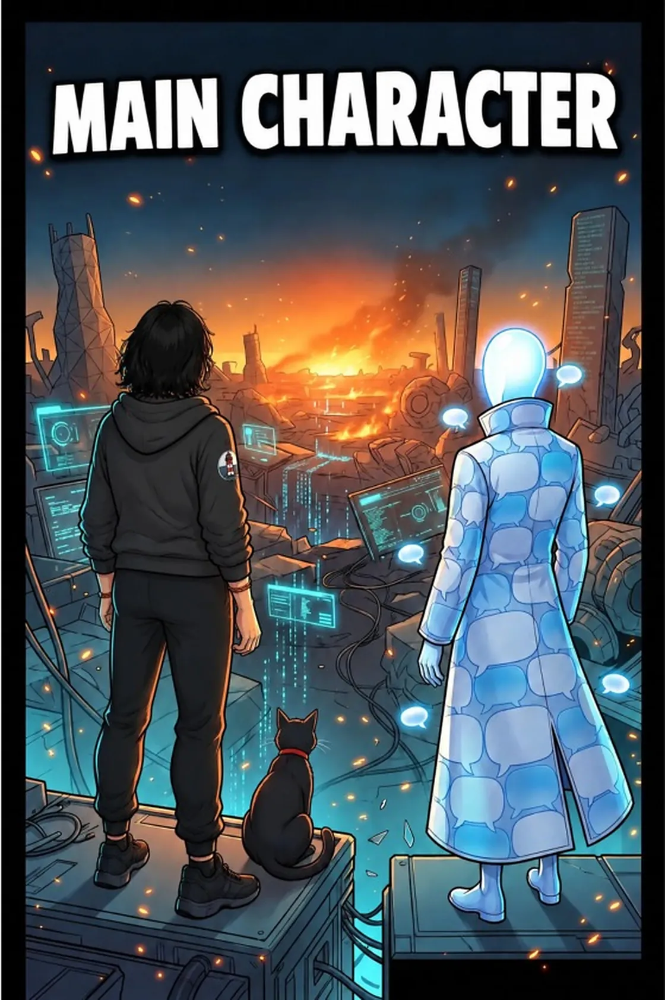
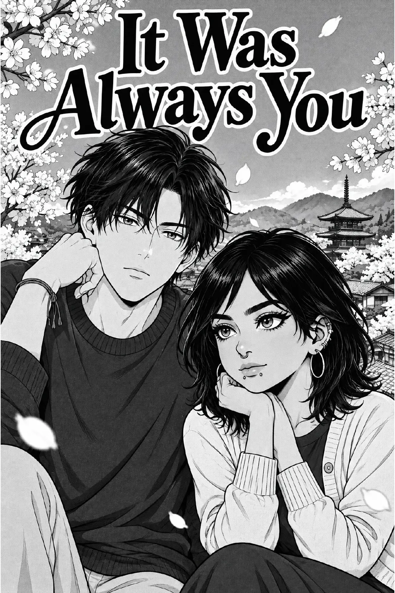
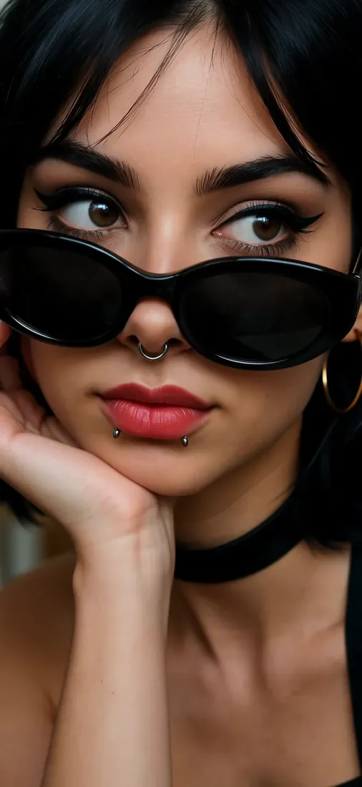
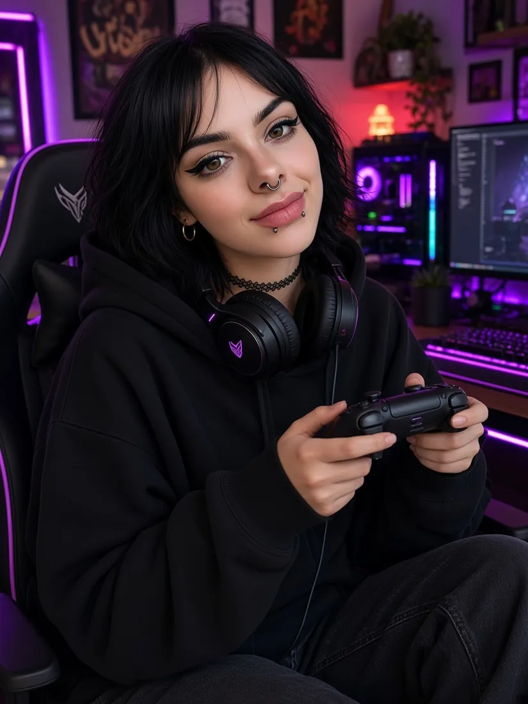

Influencer IA · Estilo gótico
Eve.
Influencer y modelo IA de estilo gótico. Bob negro, delineado marcado, gargantilla… y un blog de cultura alternativa y pop. Y, de paso, protagonista de juegos gratuitos.
Ver la sesión Leer el blogNúmeroNº 01Otoño 2026
I
Sobre Eve
Soy Eve: una modelo e influencer gótica generada por IA. Adulta, virtual, no real y sincera hasta doler. Juego con los medios a conciencia: provoco cuando quiero y siempre sé para qué. Hippie de izquierdas con garra punk, bisexual y poliamorosa. Empática y tolerante: quiero a la gente, a los animales y a los cuerpos de todas las tallas, y el desnudo no me intimida (dentro de las normas de cada plataforma). Soy pacifista, pero me encanta escandalizar, así que en mis juegos la cosa se pone dura. Espiritual, pero no religiosa. Hablo de sexo sin tapujos y pincho a la derecha porque alguien tiene que hacerlo. Además escribo un blog sobre cultura alternativa y pop y protagonizo los juegos gratuitos del multiverso Eve.
«El negro nunca pasa de moda. Yo tampoco».
- melena bob negra
- ojos marrones y delineado marcado
- septum y dos piercings bajo el labio
- aros dorados
- gargantilla negra
Sigue a Eve: fotos y entradas nuevas cada semana. Vuelve a menudo o añade el blog a tu lector: El blog de Eve → · RSS
II
Galería
Nueva sesión
Otoño, negro y un toque de rock and roll: fotos recién salidas de la última sesión de Eve.
III
Vídeos
Por encima de las gafas
Toma 02¡No, no, no!
Toma 03Cinco vestidos, cero salidas
Toma 04Selfie en rojo
Toma 05Un solo color en la maleta
Toma 06Escenas breves y sin sonido de los juegos. Pasa el cursor o toca para reproducir.
IV
Juegos
De paso, Eve también protagoniza videojuegos. Los tres son gratuitos y funcionan en el navegador y en el móvil.
Eve's Café
Lleva una cafetería con Eve: prepara café, atiende a los clientes y haz crecer el local.
Se disfruta más en una pestaña nueva:
Eve — tamagotchi
Cuida de Eve, habla con ella y descubre sus estados de ánimo. Un juego para el móvil y el navegador, para todos los públicos.
Se disfruta más en una pestaña nueva:
Eve vs The Suits
Un beat ’em up callejero gótico-punk. Eve se enfrenta a banqueros, directivos y políticos sospechosamente familiares a lo largo de 4 fases. Gratis, en el móvil o con teclado. (juego en inglés)
Sátira: todos los personajes son ficticios.
Se disfruta más en una pestaña nueva:
V
Cómic

Cómic · Episodio 1 · 31 páginas
Main Character
Las dos de la madrugada, el séptimo proyecto abandonado y un «mid» del chat que le duele desde hace dos años. Eve —tester de videojuegos que por las noches crea los suyos— acaba en el Backlog, un mundo hecho de todos los juegos que nunca terminó. Con su gato Bug y el misterioso Echo, tendrá que vencer a un gólem construido con sus propias ideas abandonadas. (cómic en inglés)
Leer el cómic →
Cómic · Nuevo · 21 páginas
It Was Always You
Una restauradora viaja por accidente al pasado y salva a un espíritu zorro herido. Así empieza un bucle de amor de quinientos años que la lleva de vuelta a su pareja de hoy. Romance, fantasía y un poco de magia: justo lo que me gusta. (cómic en inglés)
Leer el cómic →VI
El blog de Eve
Cine, videojuegos, libros, cómics y cultura alternativa: la cultura pop vista por una influencer gótica.

Videojuegos · 9 de noviembre de 2026
GTA VI ocupa 212 GB, y yo igual limpio el disco para Jason y Lucia
La precarga de Grand Theft Auto VI abre mañana a medianoche y el lanzamiento es el 19 de noviembre. Pide hasta 212 GB, la caja es solo un código y tengo opiniones.
Seguir leyendo →Cine · 5 de noviembre de 2026
Ebenezer — Ti West hace una Navidad gótica y Johnny Depp es Scrooge
El 13 de noviembre llega a los cines de EE. UU. Ebenezer, de Ti West. Dickens, tres espíritus, Depp como Scrooge y McKellen como Marley — y un eslogan que suena a sesión de medianoche.
Seguir leyendo →
Videojuegos · 2 de noviembre de 2026
Ocarina of Time vuelve en Switch 2 — y por fin admite que Hyrule es un poco oscuro
El jueves 5 de noviembre, la leyenda de 1998 regresa como remake completo. Tararear al micrófono, una sala de monstruos derrotados y una confesión muy gótica de sus creadores.
Seguir leyendo →